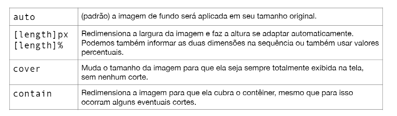

Para colocar uma imagem no fundo é simples, basta usar a funcao background-image seguindo da funcao URL
Para alterar o tamanho da imagem utilizamos background-size: width height;
Para a repeticao da imagem podemos utilizar 3 formar
o primeiro ira repetir em todo o body a imagem fazendo com que ela se mutiplque ate preenche a pagina inteira.o ponto de referencia padrao sempre vai ser o lado superior direito da tela porem da pra mudar essa posicao de referencia
a segunda ela é utilizada para nao repetir a imagem fazendo com que fique apenas uma para o body inteiro
a terceira e a querta sao X ira repetir a imagem no eixo-x e y no eixo Y